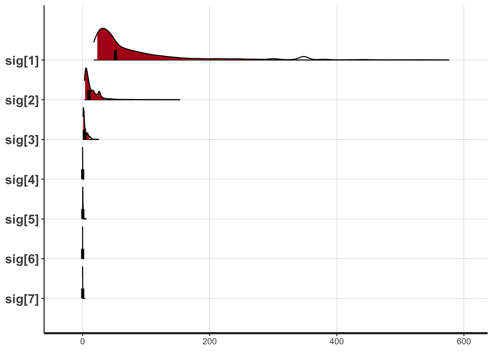
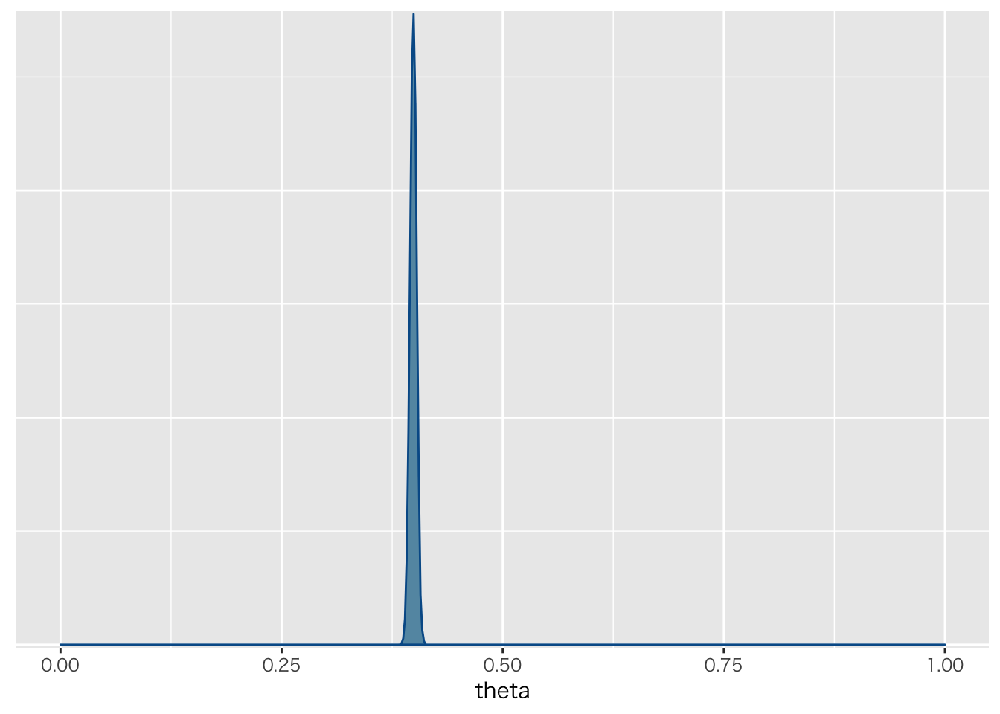
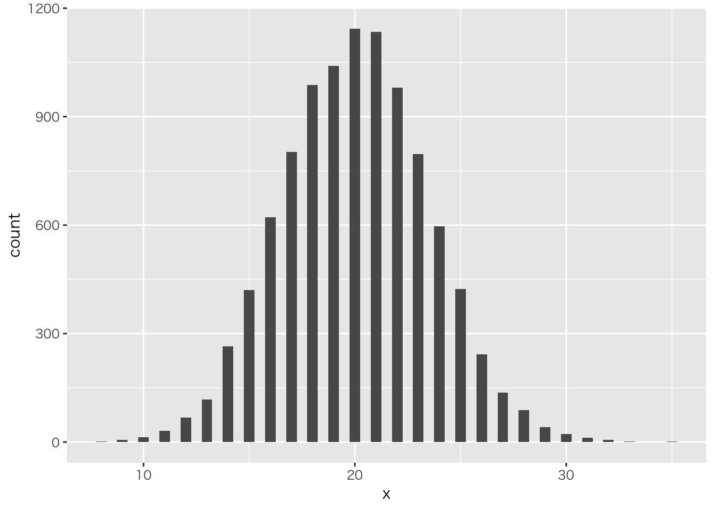
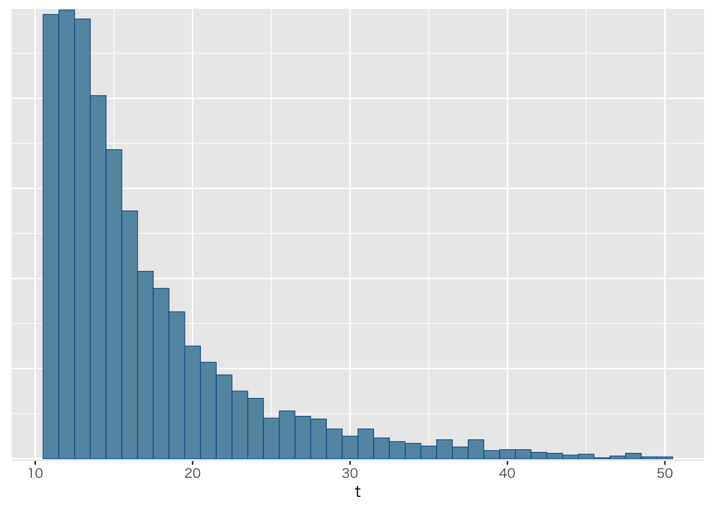

確率モデルは面白い
確率モデルは面白い
7scientist
## データの準備
X <- c(-27.020,3.570,8.191,9.808,9.603,9.945,10.056)
sc7 <- list(N=NROW(X),X=X)## モデルコンパイル
model <- stan_model("SevenScientist.stan")## data{
## int<lower=0> N;
## real X[N];
## }
##
## parameters{
## real mu;
## real<lower=0> sig[N];
## }
##
## model{
## for(n in 1:N){
## //likelihood
## X[n] ~ normal(mu,sig[n]);
## //prior
## sig[n] ~ inv_gamma(0.0001,0.0001);
## }
## // prior
## mu ~ normal(0,1000);
## }## 推定
fit <- sampling(model,sc7,iter=10000)## Warning: There were 7154 divergent transitions after warmup. Increasing adapt_delta above 0.8 may help. See
## http://mc-stan.org/misc/warnings.html#divergent-transitions-after-warmup## Warning: Examine the pairs() plot to diagnose sampling problems## 表示
fit## Inference for Stan model: SevenScientist.
## 4 chains, each with iter=10000; warmup=5000; thin=1;
## post-warmup draws per chain=5000, total post-warmup draws=20000.
##
## mean se_mean sd 2.5% 25% 50% 75% 97.5% n_eff Rhat
## mu 9.90 0.01 0.11 9.60 9.81 9.94 9.95 10.06 104 1.03
## sig[1] 154.21 13.63 906.95 17.49 32.33 51.92 107.89 576.71 4426 1.00
## sig[2] 34.45 6.60 439.63 2.94 5.80 10.01 20.97 153.57 4438 1.00
## sig[3] 7.66 0.82 53.58 0.77 1.55 2.79 6.32 25.70 4264 1.00
## sig[4] 0.43 0.04 3.28 0.00 0.06 0.15 0.29 1.97 7303 1.00
## sig[5] 2.38 0.78 62.10 0.03 0.25 0.41 0.75 6.07 6311 1.00
## sig[6] 0.52 0.09 8.72 0.00 0.00 0.08 0.23 1.99 9369 1.00
## sig[7] 1.13 0.31 34.71 0.00 0.08 0.19 0.48 3.62 12485 1.00
## lp__ -3.26 0.39 2.92 -9.71 -5.25 -2.94 -0.86 0.90 55 1.09
##
## Samples were drawn using NUTS(diag_e) at Mon Aug 27 21:43:44 2018.
## For each parameter, n_eff is a crude measure of effective sample size,
## and Rhat is the potential scale reduction factor on split chains (at
## convergence, Rhat=1).## 描画
plot(fit,pars=c("sig[1]","sig[2]","sig[3]","sig[4]",
"sig[5]","sig[6]","sig[7]"),show_density=T)## ci_level: 0.8 (80% intervals)## outer_level: 0.95 (95% intervals)
打ち切りデータ
## データの準備
nfails <- 10
n <- 50 # Number of questions
datasasoon <- list(nF=nfails,N=n) ## モデルコンパイル
sasoon <- stan_model("censored.stan")## data{
## int<lower=0> nF; // number of failes
## int<lower=0> N; // number of questions
## }
##
## parameters{
## real<lower=0.25,upper=1> theta;
## }
##
## model{
## 30 ~ binomial(N,theta);
## target += nF * (log(binomial_cdf(25,N,theta) - binomial_cdf(14,N,theta)));
## }fit <- sampling(sasoon,datasasoon)
fit## Inference for Stan model: censored.
## 4 chains, each with iter=2000; warmup=1000; thin=1;
## post-warmup draws per chain=1000, total post-warmup draws=4000.
##
## mean se_mean sd 2.5% 25% 50% 75% 97.5% n_eff Rhat
## theta 0.44 0.00 0.03 0.38 0.42 0.44 0.46 0.49 1276 1
## lp__ -40.62 0.02 0.75 -42.83 -40.78 -40.32 -40.15 -40.09 1426 1
##
## Samples were drawn using NUTS(diag_e) at Mon Aug 27 21:43:48 2018.
## For each parameter, n_eff is a crude measure of effective sample size,
## and Rhat is the potential scale reduction factor on split chains (at
## convergence, Rhat=1).fit %>% as.array %>%
bayesplot::mcmc_dens(pars="theta") + xlim(0,1)## Scale for 'x' is already present. Adding another scale for 'x', which
## will replace the existing scale.
二項分布を確認しておこう
二項分布の例
theta <- 0.4
Ntrial <- 50
size <- 10000
data.frame(x=rbinom(size,Ntrial,theta)) %>%
ggplot(aes(x=x))+geom_histogram(binwidth = 0.5)
今回の例を乱数で作ってみる
### 仮にtheta=0.4とする
N <- 10000
data.frame(X=rbinom(N,50,0.4)) %>%
table() %>% data.frame() %>%
rename(tbl=1) %>% mutate(tbl=as.numeric(levels(tbl)[tbl])) %>%
right_join(.,data.frame(tbl=1:50)) %>%
mutate(Freq=replace_na(Freq,0)) %>%
mutate(Cum = cumsum(Freq)/N) %>%
mutate(COL = ifelse(tbl<15,1,ifelse(tbl<25,2,3))) %>%
ggplot(aes(x=tbl,y=Cum,fill=as.factor(COL))) +
geom_bar(stat="identity",alpha=0.5) +
xlab("")+ylab("")+ theme(legend.position = "none")## Joining, by = "tbl"変化点の検出
c <- scan("changepointdata.txt")
n <- length(c)
t <- 1:n
datapoints <- list(C=c,N=n,Time=t)ChangeDetection <- stan_model("ChangeDetection.stan")## data{
## int<lower=0> N;
## int<lower=0> Time[N];
## real C[N];
## }
##
## parameters{
## vector<lower=0>[2] mu;
## real<lower=0> sigma;
## real<lower=0,upper=N> tau;
## }
##
##
## model{
## //prior
## mu[1] ~ normal(0,1000);
## mu[2] ~ normal(0,1000);
## sigma ~ cauchy(0,5);
##
## //likelihood
## for(n in 1:N){
## if(Time[n]> tau){
## C[n] ~ normal(mu[2],sigma);
## } else {
## C[n] ~ normal(mu[1],sigma);
## }
## }
##
## tau ~ uniform(0,N);
## }fit <- sampling(ChangeDetection,datapoints)## Warning: There were 3994 transitions after warmup that exceeded the maximum treedepth. Increase max_treedepth above 10. See
## http://mc-stan.org/misc/warnings.html#maximum-treedepth-exceeded## Warning: Examine the pairs() plot to diagnose sampling problemsprint(fit)## Inference for Stan model: ChangeDetection.
## 4 chains, each with iter=2000; warmup=1000; thin=1;
## post-warmup draws per chain=1000, total post-warmup draws=4000.
##
## mean se_mean sd 2.5% 25% 50% 75% 97.5%
## mu[1] 37.88 0.03 0.27 37.37 37.70 37.88 38.06 38.41
## mu[2] 30.60 0.02 0.30 30.00 30.39 30.60 30.81 31.18
## sigma 6.84 0.01 0.13 6.58 6.75 6.84 6.93 7.10
## tau 732.08 0.12 1.93 729.08 731.08 731.70 733.01 737.12
## lp__ -2841.63 0.08 1.47 -2845.05 -2842.39 -2841.43 -2840.58 -2839.47
## n_eff Rhat
## mu[1] 109 1.03
## mu[2] 177 1.02
## sigma 93 1.01
## tau 241 1.01
## lp__ 333 1.01
##
## Samples were drawn using NUTS(diag_e) at Mon Aug 27 21:48:56 2018.
## For each parameter, n_eff is a crude measure of effective sample size,
## and Rhat is the potential scale reduction factor on split chains (at
## convergence, Rhat=1).可視化
df <- transform(c)
Ms <- rstan::get_posterior_mean(fit,pars="mu")[,5]
point <- round(apply(as.matrix(rstan::extract(fit,pars="tau")$tau),2,median))
df$Mu <- c(rep(Ms[1],point),rep(Ms[2],n-point))
df %>% dplyr::mutate(num=row_number()) %>% ggplot(aes(x=num,y=X_data))+geom_line(alpha=0.5)+
geom_point(aes(y=Mu),color="blue")
飛行機を再捕獲する
x <- 10 # number of captures
k <- 4 # number of recaptures from n
n <- 5 # size of second sample
tmax <- 50 # maximum population size
datastan <- list(X=x,N=n,K=k,TMax=tmax)planeModel <- stan_model("plane.stan")## data{
## int<lower=0> X; //第一標本サイズ
## int<lower=0> N; //第二標本サイズ
## int<lower=0,upper=N> K; //再捕獲した数
## int<lower=X> TMax; // ありえそうな最大数
## }
##
## transformed data{
## int<lower=X> tmin; //少なくともこれぐらいはいる
## tmin = X + N - K;
## }
##
## parameters{
## }
##
## transformed parameters{
## vector[TMax] lp; //最大数までの尤度
## for(t in 1:TMax){
## if(t < tmin){
## // 最低限以下はあり得ないので尤度を負の無限大にする
## lp[t] = log(1.0/TMax) + negative_infinity();
## }else{
## // 最大値まで均等にありそうな超幾何分布 HM(K|N,X,台数)
## lp[t] = log(1.0/TMax) + hypergeometric_lpmf(K|N,X,t-X);
## }
## }
## }
##
## model{
## target += log_sum_exp(lp);
## }
##
## generated quantities{
## int<lower=tmin,upper=TMax> t;
## simplex[TMax] tp;
## tp = softmax(lp);
## t = categorical_rng(tp);
## }fit <- sampling(planeModel,datastan,algorithm="Fixed_param")
fit %>% as.array %>% bayesplot::mcmc_hist(pars="t",binwidth=1)